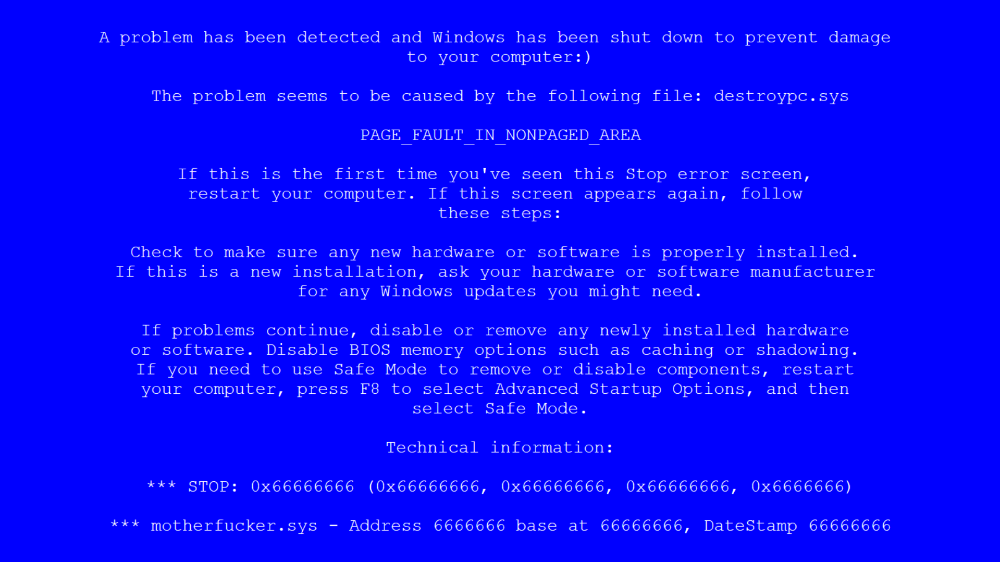
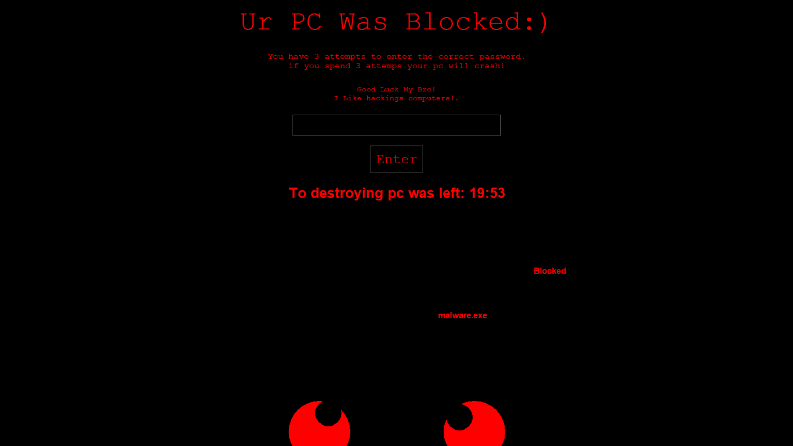

Download WinLocker
WinLocker
Fake Bsod Menu


Back to pageВинлокер написаний на пайтоні using tkinter я думаю це кращий вінлокер спочатку на екран вилазить череп з ascii символів потім fakebsod а потом меню він устраюється у winlogon блокує гарячі клавіші ітд
Скачувань: 0